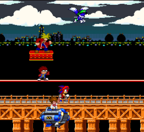
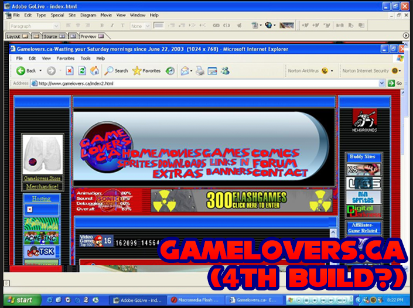
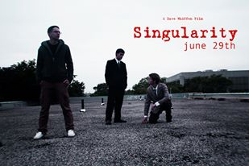
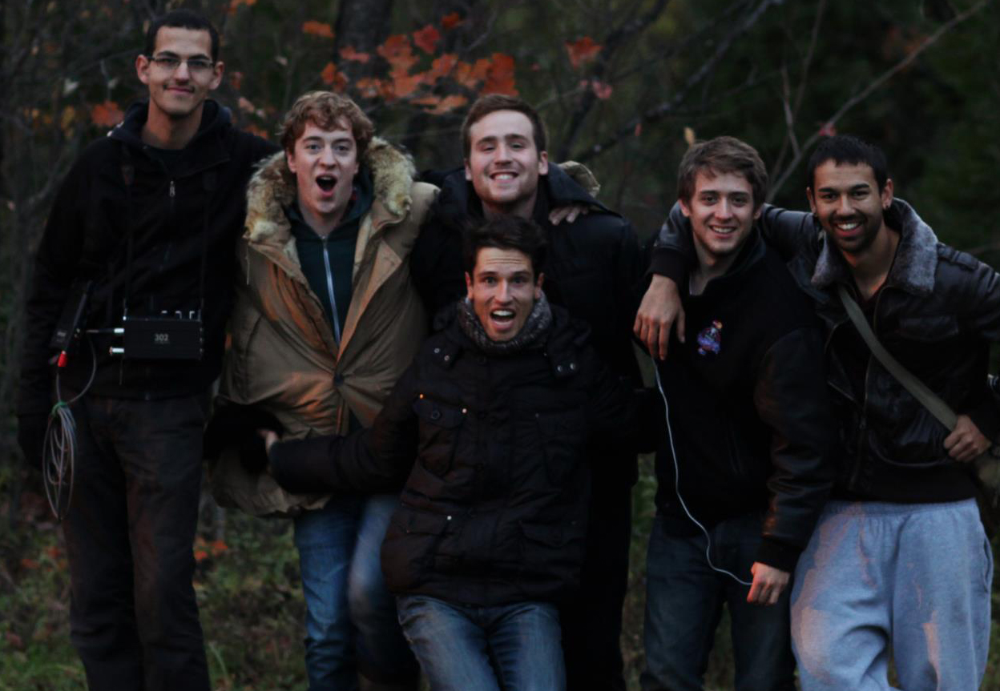
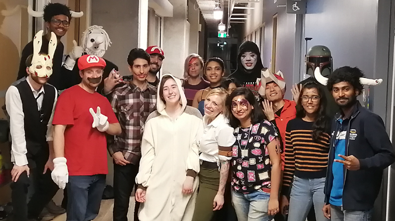
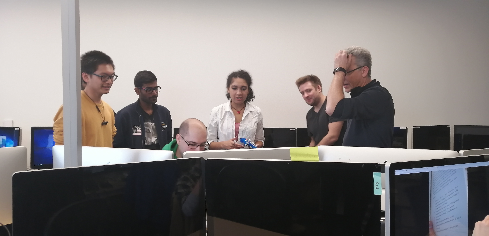

-
About Me
-
"Think big, dream hard, dare to be different!"
Dave Whiffen is from Oakville, Ontario, Canada.
1999-2006
Dave originally taught himself to write code at the age of nine.
After also teaching himself Web Design and Flash Animation , Dave built Gamelovers.ca, a gaming website.
His friends and him spent years making animated movies, comics, and making Games. 
 By 2004, Gamelovers had recieved over 200,000 unique visitors.
Dave had also brought in a staff of a dozen artists, who also produced content for the website.
- Next
-
2007-2010
By 2007, Dave’s interests had eventually shifted towards film production.After several years of producing and editing freelance projects, Dave wrote and produced his own feature length film, called 'Singularity'.
The film premiered in 2010 at his local school theater, and all proceeds were donated to the ‘HOPE’ charity.
 
- Next
-
2010-2015
In 2010, Dave was accepted to Ryerson University’s Radio and Television (Media Production) program.
Dave majored in EFP Film and Television Broadcast, and won two awards for his projects.
He won 'Best First Year Film' for 'Time and Again', and 'Best Practicum' for 'Hunting Season.
Dave graduated in 2015.

 - Next
-
In 2014, Dave earned an internship with CBC and Hockey Night in Canada through Ryerson.
Dave worked as a Program Assistant, shot-listing video, editing segments, and conducting research for the broadcast.- Next
-
2013-Present
In 2013, Dave was hired as Statistician for the Ryerson University Men’s Hockey Team, working under head coach Graham Wise.Over seven seasons, Dave has built his own video and analytics systems for the team from the ground up.
Dave has developed:
Team Applications,
Puck Possession Applications,
Ice-time Applications,
Video Coaching-Specific Applications,
Pre-Scout Applications.Dave currently works as Ryerson's Video Coach.
- Next
-
2011-Present
In the summers, Dave works as a Carpenter for One York Construction in Toronto.


He's spent his last 9 summers working in various construction, landscaping, and carpenter positions.
- Next
-
2019-Present
In September 2019, Dave went back to school for a Post Graduate Certificate in Game Design at George Brown.
 He graduates in August, and will be working as a Level Designer.


Rise & Fall (2020)
Release Date: To Be Announced
Role: Lead Level Designer & Producer
Description: A 4 person couch co-op sports game.
Two teams battle to score the ball into the other team's net, while using their unique abilities to shrink and grow.

Overkart (2020)
Release Date: To Be Announced
Role: Level Designer & Creative Director
Description: A Racing game with class-based combat, destructible environments, and alternate routes.
Race on tracks against friends or AI. Pick your playstyle, optimize your route, alter the map, and open up alternate paths. Play your way.

Errant (2020)
Release Date: To Be Announced
Role: Level Designer
Description: A single-player shooter with RPG-like decisions that affect the story path.
You play as Lucas, a man who has been awoken by a mysterous agency with the power to enter people's minds. Your job is enter people's brains are eliminate bad thoughts before they can commit crimes.
Office Birthday Party (2020)
Release Date: To Be Announced
Role: Level Designer & UI
Description: A co-op and single player puzzle game.
Players are new hires at a new office. They have a huge list of tasks to complete, but have to avoid other workers to not be dragged into the Office Birthday Party! Combination of puzzle solving and top down stealth.

Destiny 2: Sakrion's Demise (Fan-Made Level) (2020)
Release Date: To Be Announced
Role: Level Designer
Description: A Fan-Made Mission for Destiny 2: Shadowkeep.
Sakrion, a Genesis Mind, has been mining into Rasputin's bunkers on Io. The Vex need to be stopped to protect our Earth Defense System. Enter the bunker and defeat all Vex in your way.